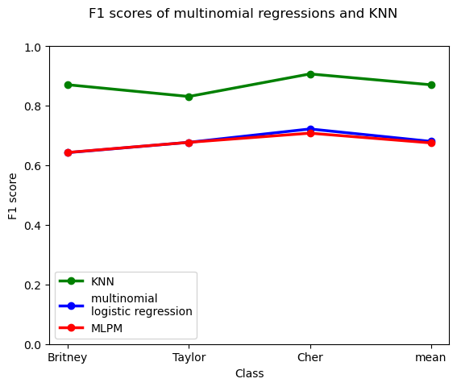

Introduction
In the second edition of “An Introduction to Statistical Learning”, James, Witten, Hastie, and Tibshirani outline why it is a bad idea to use linear regression for a multiclass classification task (see pg. 131). In short, the linear regression coefficients and predicted probabilities are dependent on the ordering of the classes.
Suppose we want to predict whether someone likes Britney Spears, Taylor Swift, or Cher. If we define the outcome/target variable as follows:
Y = \begin{cases} 0: Britney \\ 1: Taylor \\ 2: Cher \end{cases}
and run a linear regression, the coefficients for the predictors mean something completely different compared to if we simply reorder the classes, for example like this:
Y = \begin{cases} 0: Taylor \\ 1: Cher \\ 2: Britney \end{cases}
Furthermore, linear regression assumes that the difference between the classes is equally big (which makes absolutely no sense when you talk about a qualitative target variable).
On the other hand, James et al. also mention that using linear regression for a binary classification task is generally not all that problematic, though the authors rightly conclude that such an approach is still undesirable for many reasons, for example because you can get nonsensical predicted probabilities such as -0.2 or 1.5. What James et al. don’t mention is that using linear regression on a binary dependent variable is considered a valid approach by (mostly/only) economists and sociologists, who refer to such a model as a “linear probability model” or LPM. I have written about the LPM before and I generally do not think that the LPM makes sense or should be used. However, I hadn’t really thought of using LPMs for classification tasks.
That gave me an idea: can’t we simply decompose a multiclass classification problem into a series of LPMs? Would it work, as in: would the prediction performance be at least reasonably high to warrant the use of such a model? After all, estimating a series of LPMs is sort of the same thing as approximating a multinomial logistic regression model by fitting a series of binary logistic regressions.
Note: This model is meant to be a joke (literally). As you will see from my conclusion, I do not recommend using the MLPM as a classification algorithm. You should also not use the LPM… Also note that the example of liking either Britney, Taylor, or Cher is completely ridiculous. Of course you should like all of them!
You can find the code also on GitHub.
Inventing Anna the multinomial linear probability model (MLPM)
The “multinomial linear probability model” is not actually a proper statistical model, it is just a series separate “binary” LPMs put together. I am not 100% sure about the mathematical formula for the MLPM (since I just made it up and the model doesn’t really make sense), but I guess it should be something like this (correct me if I’m wrong!):
Pr(Y_{i} = k) = \alpha + \sum_{j=1}^{k} \beta_{k}X_{i}
In other words, if we have k classes to predict, we fit k separate binary LPMs. For example, if we have three classes, [0, 1, 2] (e.g., liking Taylor, Britney, or Cher), then we would simply fit three LPMs:
Pr(Y_{i} = 0) = \alpha + \sum \beta_{i}X_{i}
Pr(Y_{i} = 1) = \alpha + \sum \beta_{i}X_{i}
Pr(Y_{i} = 2) = \alpha + \sum \beta_{i}X_{i}
This gives us three predicted probabilities:
- the probability of the observation being in class 0 (as opposed to 1 and 2) (e.g., liking Britney vs. Taylor and Cher)
- the probability of the observation being in class 1 (as opposed to 0 and 2) (e.g., liking Taylor vs. Britney and Cher)
- the probability of the observation being in class 2 (as opposed to 0 and 1) (e.g., liking Cher vs. Taylor and Britney)
My intuition told me that this is a deeply weird approach. As described above, the problem with the LPM is that it can yield predicted probabilities outside the interval [0,1]. This is not the case when using a model that explicitly places constraints on the range of the predicted probabilities, such as (multinomial) logistic regression. In case of, for example, multinomial logistic regression, the sum of the predicted probabilities will always be 1 as multinomial logistic regression models a joint probability distribution for all outcomes. In case of the MLPM, just like with the regular “binary” LPM, there are no constraints on the range of the predicted probabilities, which implies that there is the potential for
\sum_{j=1}^{k} Pr(Y_{i} = k) ≠ 1
This obviously doesn’t make sense. The sum of predicted probabilities cannot be greater or smaller than 1. I assumed that this fundamental flaw of the “MLPM” would make it a poor classifier.
Little did I know…
(How) does it work?
There are multiple ways of estimating an “MLPM”. One way would be to create dummy variables for the target variable, fit k LPMs and calculate the k predicted probabilities.
An easier way is to use the OneVsRestClassifier from sklearn.multiclass, which breaks down a multiclass classification problem into a series of binary classification tasks. Usually, you would use it with a logistic regression, but we can simply use a linear regression model instead.
To assess the extent to which the MLPM “works” as a classification algorithm, I will calculate and plot the F1 scores for all models (indivually per class and averaged). The F1 score is the harmonic mean of precision and recall, and is commonly used to compare the performance of different classifiers. F1 ranges from 0 (bad) to 1 (perfect). So, the higher the F1, the better.
Importing packages and simulating data
First, let’s import the required packages and define a function that simulates our data.
#Import required packages
import pandas as pd
from sklearn.multiclass import OneVsRestClassifier
from sklearn.linear_model import LinearRegression, LogisticRegression
from sklearn.neighbors import KNeighborsClassifier
from sklearn.datasets import make_classification
from sklearn.metrics import classification_report
from sklearn.model_selection import train_test_split
import matplotlib.pyplot as plt
import seaborn as snsI specify the target to have 3 classes (0: liking Britney, 1: liking Taylor, 2: liking Cher), 1000 observations, and a total of 10 features. Furthermore, I split the data into a training and a testing data set. This is not strictly necessary in our case, but it’s always good to check if our model can generalize to unseen data.
def simulate_data(classes = 3):
X, y = make_classification(n_samples = 1000,
n_features = 10,
n_informative = 3,
n_redundant = 7,
n_classes = classes,
random_state = 1)
X_train, X_test, y_train, y_test = train_test_split(X, y, test_size = 0.20, random_state = 42)
return(X_train, X_test, y_train, y_test)Implementing the MLPM
Next, we implement our state-of-the-art MLPM by passing LinearRegression() from sklearn.linear_model to the OneVsRestClassifier. We, then, calculate the predicted proabilities and get the classification_report as a Pandas data frame. The classification_report here simply picks the highest predicted probability as the predicted value.
def mlpm(X_train, X_test, y_train, y_test):
"""This function fits multinomial linear probability models on the test data,
and gets predictions for the training data
"""
lpm = OneVsRestClassifier(LinearRegression()).fit(X_train, y_train)
y_pred = lpm.predict(X_test)
lpm_report = classification_report(y_test, y_pred, output_dict = True)
lpm_report = pd.DataFrame(lpm_report).transpose()
return lpm_reportImplementing relevant baselines: multinomial logistic regression and K-nearest neighbors
To gauge the performance of the MLPM, I implemented two “outdated” alternatives to the MLPM (“outdated” as the MLPM is super novel, from 2022 😏), namely multinomial logistic regression and K nearest neighbors. Multinomial logistic regression is an extension of logistic regression (a parametric supervised learning algorithm), and K nearest neighbors (a non-parametric supervised learning method).
I defined two functions for multinomial logistic regression and KNN, respecitively:
#Create multnomial logistic regression
def multinom(X_train, X_test, y_train, y_test):
"""This function fits multinomial logistic regression on the test data,
and gets predictions for the training data
"""
multinom = OneVsRestClassifier(LogisticRegression(multi_class = "multinomial")).fit(X_train, y_train)
y_pred = multinom.predict(X_test)
multinom_report = classification_report(y_test, y_pred, output_dict = True)
multinom_report = pd.DataFrame(multinom_report).transpose()
return multinom_report
#Create KNN Classifier
def knn(X_train, X_test, y_train, y_test, classes):
"""This function fits KNN on the test data,
and gets predictions for the training data
"""
knn = KNeighborsClassifier(n_neighbors = classes)
knn.fit(X_train, y_train)
y_pred = knn.predict(X_test)
knn_report = classification_report(y_test, y_pred, output_dict = True)
knn_report = pd.DataFrame(knn_report).transpose()
return knn_reportPlotting the results
Lastly, I define a function to plot the results and wrap all previous functions in a main function:
def plot(lpm, log, knn):
"""This function plots the F1 scores per class and averaged for all three models"""
fig, ax = plt.subplots(nrows=1, ncols=1)
fig.suptitle('F1 scores of multinomial regressions and KNN')
#Set line style and line width
ls = "-"
lw = 2.5
#Add lines for the 3 models
plt.plot(knn.index[:-2], knn['f1-score'][0:4], marker = 'o', color = 'g',
linewidth=lw, linestyle=ls)
plt.plot(log.index[:-2], log['f1-score'][0:4], marker = 'o', color = 'b',
linewidth=lw, linestyle=ls)
plt.plot(lpm.index[:-2], lpm['f1-score'][0:4], marker = 'o', color = 'r',
linewidth=lw, linestyle=ls)
#Set axes title, label, and legend
ax.set_ylabel('F1 score')
ax.set_xlabel('Class')
ax.legend(('KNN', 'multinomial \nlogistic regression', 'MLPM'))
#Plot formatting
plt.xticks(['0', '1', '2', 'accuracy'], ['Britney', 'Taylor', 'Cher', 'mean'])
plt.ylim([0, 1])
plt.show()
def main():
"""This function calculates the three models and plots the results"""
classes = 3
X_train, X_test, y_train, y_test = simulate_data(classes = classes)
mod1 = mlpm(X_train, X_test, y_train, y_test)
mod2 = multinom(X_train, X_test, y_train, y_test)
mod3 = knn(X_train, X_test, y_train, y_test, classes = classes)
plot(mod1, mod2, mod3)
plt.show()The result: how well does the MLPM perform?
Now, all there is left to do is to call our main function and examine the resulting plot showing the F1 scores of the three models:
main()
The plot shows us that - perhaps shockingly enough - the MLPM does not perform all that terribly. It is only slightly worse than multinomial logistic regression, though when compared to KNN, both the MLPM and multinomial logistic regression don’t perform well.
Conclusion
Well, I guess the MLPM sort of works for multiclass classification tasks. In hindsight, this is perhaps unsurprising, as multinomial logistic regression also uses a linear predictor function under the hood. The lower F1 scores for the MLPM might be the result of comparatively more incorrect classifications due to nonsensical predicted probabilities.
Does this mean you should use the MLPM? I don’t really think so. The MLPM does not make substantive sense, as out-of-range predicted probabilities are just not useful and it is doubtful if any of the parameter estimates make sense or have valid statistical properties. Also, a vanilla multinomial logistic regression (which does not give us problems like nonsense predicted probabilities) performs better, and KNN (and probably many other classification algorithms) beats both. So, why bother?
Reuse
Citation
@online{fang2022,
author = {Fang, Christian},
title = {Don’t Use Linear Regression for Multiclass Classification -
{Problems} with the {Multinomial} {Linear} {Probability} {Model}},
date = {2022-11-17},
url = {https://www.christianfang.eu/posts/mlpm/},
langid = {en}
}